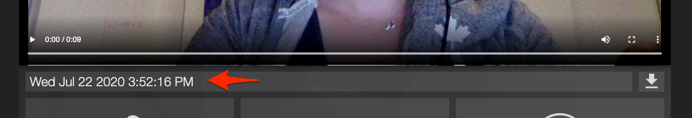
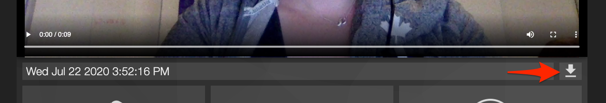

Guidelines for recording talks¶
This page lists the requirements and best practices for recording your talk in advance, so that we can maintain consistent quality and streaming stability across all talks.
Since we are aware that not everyone is experienced or comfortable with recording at home, we’re happy to share some guidelines and recommendations for creating the best talk video possible.
If you don’t feel comfortable recording at all, you have the option to schedule a “private stream” session with our video producer, where you can present your talk live over video conference, and they will record your camera and slides for later processing. Please email us to request a private stream session.
All talks are going to be processed and uploaded in advance, so it’s especially critical that you complete your recording on time! Please email us if you have any questions.
All visual and audio content (including videos, room background, and slides) must adhere to the Write the Docs Code of Conduct.
Video requirements
Duration: 30min (+- a few minutes is ok)
Single video file without edits
No effects, filters, or post-processing needed
No subtitles needed
Resolution: Minimum 720p, ideally 1080p (4K optional but it will be compressed later)
Encoding: MOV, MP4 (h.264 or similar)
Bitrate: 5-8kbps (default for most HD videos)
Webcams or external cameras both work, as long as they adhere to quality guidelines
Slides and video resolution must be 16:9 aspect ratio
Embedded videos are OK, ideally played from a local drive
Audio requirements
Clean audio track without background noise
No cutting required if recording a single file
No effects, filters, or post-processing needed
Encoding: MP3, FLAC, WAV
Quality: Minimum 44.1Hz (default for most formats)
Bitrate: Minimum 16kbps (default for most formats)
Built-in laptop microphones or external microphones both work
Audio can be in a separate file or as a part of the video file, as long as you record them at the same time so that they can be synced later
Recommended software
These recommendations are for software that we know and trust, but you are welcome to use your own software if it provides both camera and slides recording (i.e. Camtasia, BlueJeans, etc). Email us if you’re unsure whether your software qualifies.
If you choose to stream your talk privately with the video producer, you will be sent specific installation instructions for the software that they will be using to record your talk.
(Preferred) Bart at work recording studio
Hosted directly by our videographer Bart at Work, with an integrated demo video.
Panopto Record
Features:
Free browser app
Records camera and slides separately
Flexible picture-in-picture
No account registration required
How to Record on Panopto:
Go to Panopto Record.
Click on the gear icon in the bottom right corner.
Under Recording options, select the HD option, and check the Enable 5 second countdown box.
Under Arrangement, select the Show as side by side option.
Under Arrangement, select the Show as side by side option.
Under Background, select Off.
Under Smart Camera, select 1 person (unless you have a co-presenter :-p).
Click on the gear icon to close it
Click the box with plus symbol icon in the top left to share your screen.
Select your presentation (which should be in presenter mode already). If you are using Google Slides, it is recommended to select the Chrome Tab and then select the tab with your Google Slide deck.
Click Share.
If your video and mic is not on or correctly set, click the microphone and video camera icons and ensure they are correctly set to use the correct device.
When you’re ready to record, press the red record button. A timer will count down from 5 seconds.
Wait 30 seconds or so while the recording is on, and then start presenting your talk (you can navigate away or switch to your presenter notes - this will not be recorded).
When your talk is finished, wait 30 seconds or so, then press the red stop button to stop recording. This ensures your video has a buffer before and after you talk and the video producer can trim the video more precisely.
In the field below your recording, rename your file (the default is set to [Day Month Date Year Time]).

Click the download button, and a WebM file will begin downloading.

Send the WebM file to your conference organizers.
Other recording tools
In addition to Panopto, you can use the following tools to record your talks:
-
Free desktop app
Fixed picture-in-picture
Loom watermark (for free accounts)
-
Free open-source desktop app
Record locally to hard drive
Fully configurable (settings and picture-in-picture)
Tips & tricks
Since home recordings are more flexible than stage talks, we encourage you to set up your private stage in an area where you feel comfortable.
Your background wall can be blank and clean, or fun and exciting! We’d love to see your personality as the backdrop to your talk. Avoid micro-patterns in both background and clothing (tiny checkers, polkadots, stripes)
Make sure that you can close the door of the room where you are recording, to reduce background noise as much as possible. No household members allowed!
When you prepare your slides, make sure that important content isn’t hidden by the camera picture-in-picture.
Make sure that your camera doesn’t cut off the top of your head, and that there’s enough space around your head (but not too much, we don’t want you to be too far away either).
Make sure that your microphone captures your voice with clarity: - If you’re using a headset microphone, make sure it’s not too close to your mouth so that you won’t end up with poofs and crunchies in the audio. - If you’re using a built-in laptop microphone, make sure you are not too far from the laptop so that your voice is loud enough.
Test, test, test your recording before you dive in! We recommend doing a test recording of 2-5 minutes, stopping the recording, and watching it before you record the entire talk. If your test video is not behaving nicely, feel free to share the file with us and we’ll be happy to provide feedback.
While you are recording the talk, if you run into a problem with your narration but you don’t want to stop recording, we can edit it later! Take a breath, repeat the last 2-3 sentences, and when you send us the video file please write down time markers of places where edits are needed.
Don’t forget to prepare a list of technical terms for the live-captions! This should be submitted along with the video file.
If you want additional tips and tricks, check out this great video from our friends at PyCon Australia: https://youtu.be/C1TBqdULp4E